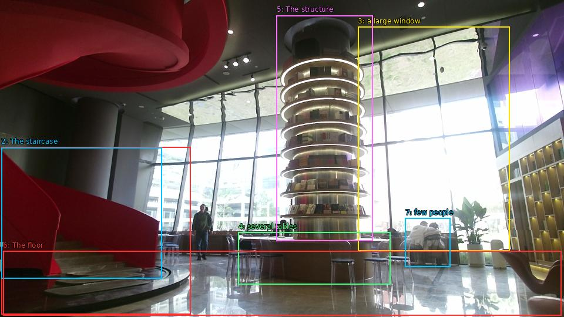

The image shows the interior of a modern building with a large circular staircase on the left side. The staircase is made of red fabric and has a curved design. On the right side of the image, there is a large window that offers a view of the city. In the center of the room, there are several tables and chairs arranged in a spiral-like structure. The structure appears to be made of metal and has multiple levels. The floor is tiled and there are a few people sitting at the tables. The overall atmosphere of the space is bright and airy.

Original · Caption raw · Grounding raw · Koordinate
Številke so lokalni ID regije. Dolge slikovne oznake so skrajšane; spodaj so celotne fraze. Napovedane regije se lahko prekrivajo ali opisujejo skupine.
| ID | Celotna fraza | bbox xyxy |
|---|---|---|
| 1 | The staircase | [2.3999998569488525, 250.83001708984375, 324.9599914550781, 535.4100341796875] |
| 2 | The staircase | [2.3999998569488525, 251.37001037597656, 275.0400085449219, 474.3900146484375] |
| 3 | a large window | [609.1199951171875, 45.630001068115234, 867.3599853515625, 427.4100036621094] |
| 4 | several tables | [405.6000061035156, 395.5500183105469, 664.7999877929688, 484.1100158691406] |
| 5 | The structure | [470.8799743652344, 26.190000534057617, 634.0799560546875, 410.1300048828125] |
| 6 | The floor | [5.279999732971191, 427.95001220703125, 955.6799926757812, 537.030029296875] |
| 7 | few people | [689.760009765625, 371.7900085449219, 766.5599975585938, 454.95001220703125] |